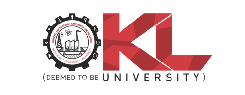
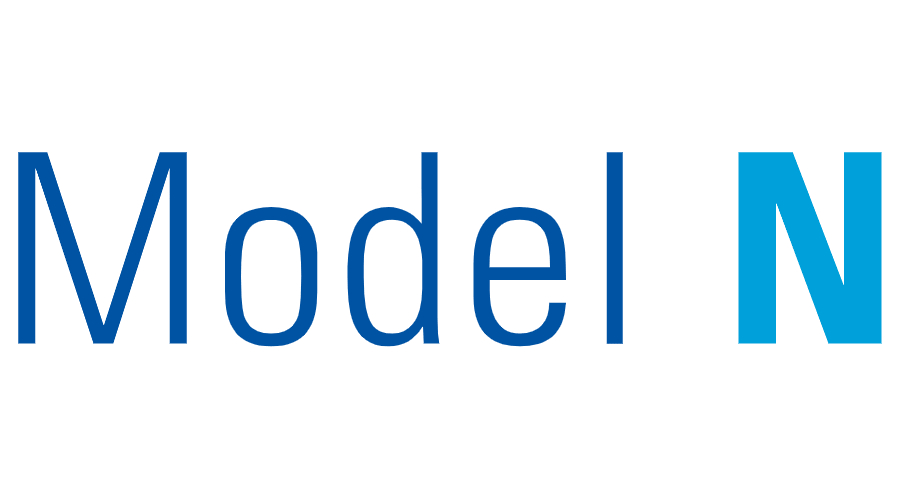

My 25 years of journey
Koneru Lakshmaiah University (KLU) (2017 - 2021)  KLU
I graduated from KLU with a Bachelor's degree in Electronics and Communication Engineering (ECE). My time at KLU provided me with a strong foundation in electronics, communication systems, and programming, preparing me for a career in technology and engineering.
Shalom Enterprises
(2019, 3-4 months)
 Shalom Enterprises
Shalom Enterprises
I had the opportunity to work as an Intern at Shalom Enterprises, a company specializing in advanced security systems and access control equipment. During my internship, I gained valuable insights into the security industry and the importance of reliable security solutions. I learned how microchips are coded using C++ and how they are integrated into security systems, broadening my understanding of technology and its applications in various fields.
Shalom Enterprises, established in 1994 and headquartered in Hyderabad, is a leading manufacturer of advanced security systems and access control equipment. The company has built a global reputation for delivering high-quality, reliable, and customizable security solutions.
Model N (2021 - Present)  Model N
I am currently working as a Technical Engineer 1 at Model N. I joined the company as a fresh graduate and have been honing my skills and gaining valuable experience over the past few years. Although I am still in the early stages of my career, with less than three years of work experience, I am eager to learn, grow, and contribute to innovative solutions in the field.
Working as a Technical Engineer has really helped me to understand the customer point of view and how Operations teams work in a SAAS organization.
Model N is a leading provider of cloud-based revenue management solutions for life sciences and high-tech companies. The company helps organizations maximize revenues, improve compliance, and streamline complex business processes by offering innovative software products tailored to industry needs. Model N's solutions enable businesses to manage pricing, contracting, incentives, and regulatory requirements efficiently, supporting growth and operational excellence in a rapidly changing market.
Personal Projects (2024 - No Endings)
[Add your personal projects here, describing your work, technologies used, and what you learned.]